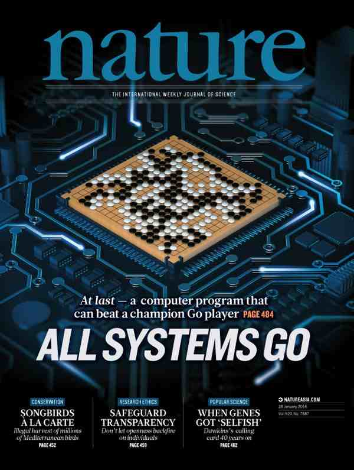
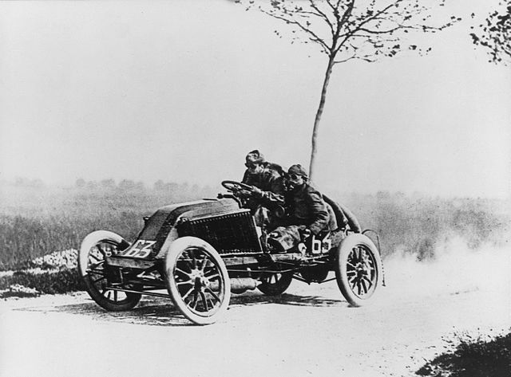
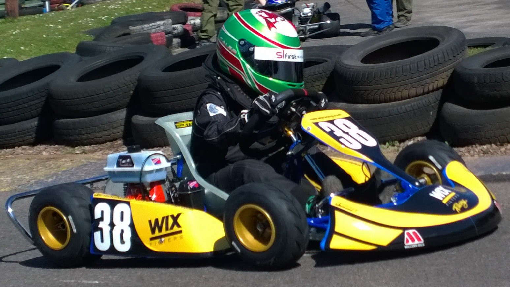
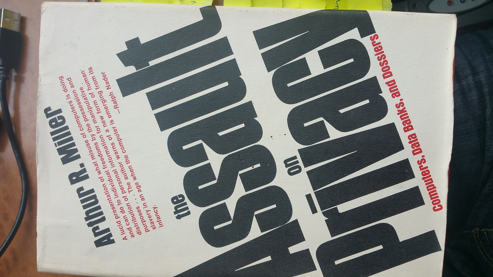
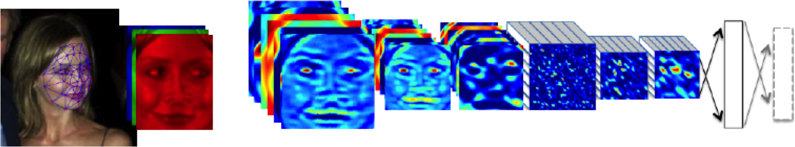
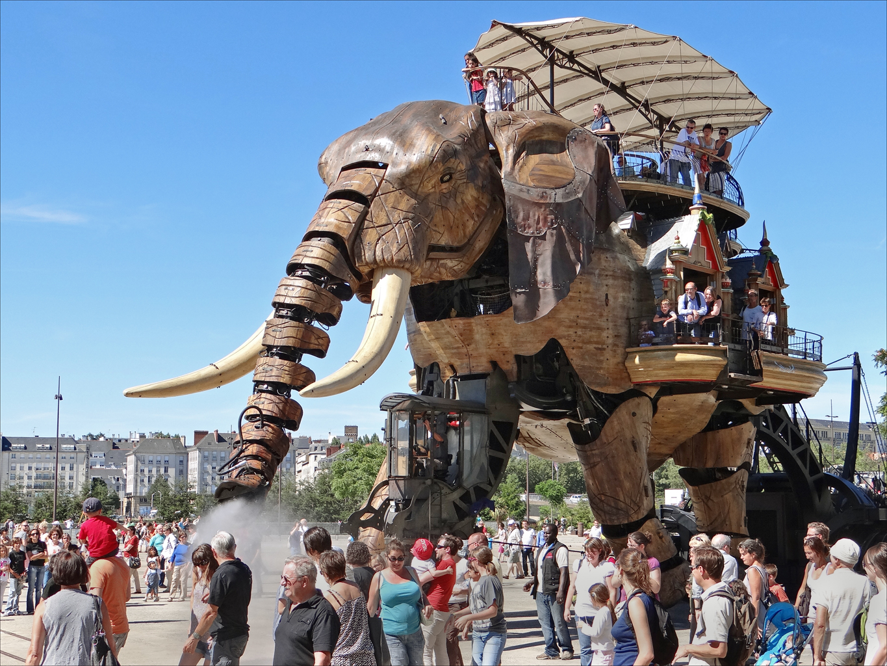
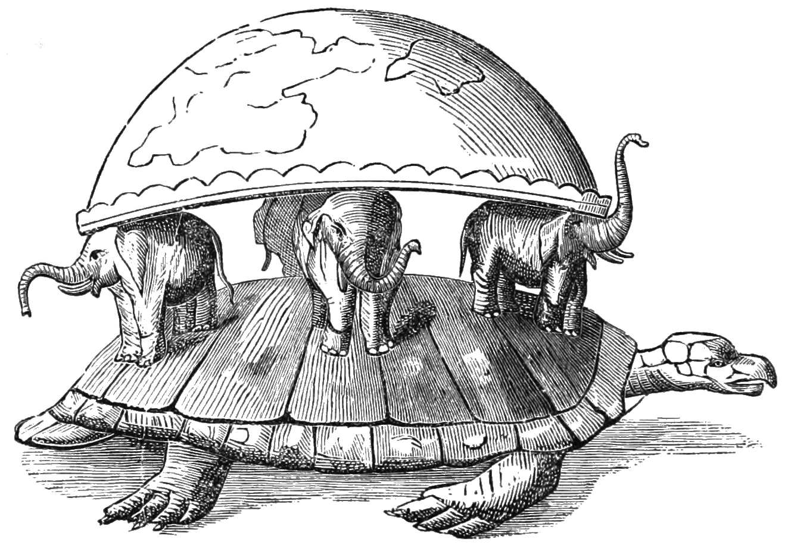
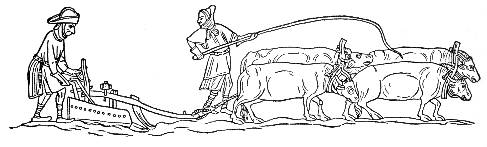

The Rise of the Algorithm
Neil D. Lawrence
2017-03-16

Reminder of the AlphaGo achievement, introduce the challenge and how it was solved. 30 million games.
~10 gigaflops
Embodiment factors: the fundamental differences between a human and a computer
10

Human brain like an F1 car, but an F1 car with bicycle wheels. We have a locked in intelligence.

Computers are better balanced, they are lower powered, but because they have high bandwidth communication they can deploy all their power on the track.
Peabody Library, laid out for human access
Large amount of digital data accessible to all

1970 publication by Arthur Miller: The Assault on Privacy
Pyschological models of intelligence: Dual process models of Cognition: Daniel Kahneman System One and System Two. Steve Peters, Our Inner Chimp.
Most people think of intelligence as Sherlock Holmes like deduction. But actually what we can achiee is closer to what a spiritualist might do when cold reading. Understanding of statistics, no rationalisation.
Outline of the DeepFace architecture. A front-end of a single convolution-pooling-convolution filtering on the rectified input, followed by three locally-connected layers and two fully-connected layers. Color illustrates feature maps produced at each layer. The net includes more than 120 million parameters, where more than 95% come from the local and fully connected.

Source: DeepFace

So in reality what we’ve created is much more akin to a mechanical elephant. One that takes inputs and feeds back responses.

Or perhaps a better analogy is that we’ve created the turtle. System Zero in the Kahneman parlance. A large data aware organ that operates at a level below our subconscious.
Conversation
This can be disturbing to humans because we are used to a low bandwidth communication rate.
We’ve developed institutions such as medicine and banks that ensure we understand when to trust and how to trust. Trust is critical to our mode of operation.
Current approach to security is that we are either locked away or not, this does not map well to our notion of trust.

It feels very much akin to the Medieval open field system. There are two ways in which our data I stored, either on our behalf by the “Lord of the Manor” or openly akin to the common land.
If we could understand how to translate human notions of trust into the digital world then we would be better placed to operate with our traditional freedoms intact.